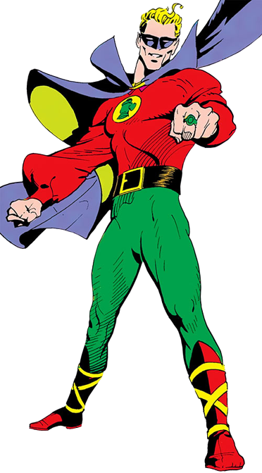

Informações do Alan Scott
Voltar
Equipes DC

Criação do Alan Scott
Alan Scott é um personagem de quadrinhos da DC Comics, conhecido como o Lanterna
Verde original. Ele foi criado por Martin Nodell e Bill Finger, fazendo sua
primeira aparição em All-American Comics #16, lançado em 1940.
O Personagem Alan Scott
Alan Scott é um dos primeiros heróis a empunhar o poder do Anel do Lanterna Verde.
Ele é um engenheiro ferroviário que, ao sobreviver a um acidente de trem causado
por uma lanterna mágica, descobre que o objeto lhe concede poderes extraordinários.
Como o Lanterna Verde, Alan Scott luta contra o mal e protege a Terra com o auxílio de seu anel,
que é alimentado pela chama verde da vontade. Ele é um membro fundador da Sociedade da Justiça
da América e também tem uma longa história de trabalho em equipe com outros heróis.
Quadrinhos Importantes do Alan Scott
Alan Scott teve várias histórias importantes nos quadrinhos, explorando seu papel como o Lanterna Verde original e sua participação na Sociedade da Justiça. Aqui estão alguns dos quadrinhos mais relevantes do personagem:
"All-American Comics" (1940-1948):
Esta série apresentou as primeiras histórias do Lanterna Verde Alan Scott, destacando seus poderes, origem e batalhas contra diversos vilões.
"Justice Society of America" (1940-1951):
Nessa série, Alan Scott foi um dos membros fundadores da Sociedade da Justiça da América, uma equipe de super-heróis que lutou contra o crime durante a Era de Ouro dos quadrinhos.
"Green Lantern: Emerald Twilight" (1994):
Nessa história escrita por Ron Marz e ilustrada por Darryl Banks, Alan Scott passa por uma transformação significativa, perdendo seu anel e adotando um novo papel como Lanterna Verde.
Adaptações em Outras Mídias
Alan Scott fez aparições em várias adaptações animadas e live-action, trazendo o Lanterna Verde original para outras mídias além dos quadrinhos. Aqui estão algumas das mais notáveis:
Série de TV "Stargirl" (2019-presente):
Alan Scott é interpretado por Joel McHale na série de TV "Stargirl". Sua versão do personagem é um membro da Sociedade da Justiça da América.
Habilidades do Alan Scott
Alan Scott possui uma série de habilidades concedidas pelo Anel do Lanterna Verde e sua conexão com a chama verde da vontade. Aqui estão algumas de suas principais habilidades:
Construção de energia:
Ele pode criar construções de energia sólida com seu anel, permitindo-lhe formar armas, escudos e outros objetos.
Voo:
Alan Scott pode voar usando a energia do anel, permitindo-lhe se mover pelo ar a altas velocidades.
Resistência e cura acelerada:
Seu anel o protege de danos físicos e acelera sua capacidade de cura.
Manipulação da chama verde:
Alan Scott pode controlar e manipular a chama verde da vontade, usando-a para atacar, defender e criar escudos protetores.
Conclusão
Alan Scott, o Lanterna Verde original, é um personagem icônico da DC Comics, com uma história rica e longa de combate ao crime e proteção da Terra. Sua conexão com a chama verde da vontade e seu anel lhe concedem poderes extraordinários, permitindo-lhe criar construções de energia e voar. Ao longo das décadas, Alan Scott desempenhou um papel importante nos quadrinhos da DC, sendo membro fundador da Sociedade da Justiça e trabalhando ao lado de outros heróis renomados. Suas histórias têm explorado temas de coragem, determinação e perseverança, tornando-o um personagem querido pelos fãs de super-heróis.